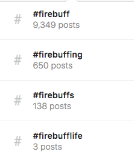

Int'l Fire Buff Associates
Social Media Briefing
July 2018
use right arrow to advance >>>
IFBA presence on Social Media
OBJECTIVE #1
Design and implement a method to increase the number of people that submit items for you to post on IFBA sites.
how to increase social media submissions
- almost all content is posted proactively by Bill, Connie, or Ian
- few examples where clubs have specifically contacted us to share something
- inability for users to directly message our facebook page could be part of the problem (currently disabled)
- a submission form is easy to create, though we should consider if it will actually be used
OBJECTIVE #2
Develop a way to teach IFBA members how to use all available social media sites.
OBJECTIVE #3
Develop a way to teach IFBA clubs how to start their own social media websites.
teaching clubs
- offer pre-recorded tutorials with walkthroughs of basics
- how to create an account
- customise your account with logos, headers, photos
- how to share + post content
- basic workflows
- brief: ideally no more than 4 - 5 minutes each
- similar content already exists on YouTube & Lynda.com, but we can tailor each video with a buff or canteen-related example
Solidify online brand identity of IFBA
- Use of consistent handle across all social media accounts
- e.g. @INTFIREBUFF vs @IFBA
- Promote use of distinct hashtags by clubs & members when posting & sharing content
- Seek verified account status for FB page
- needs: provide Facebook with articles of incorporation
buff-friendly hashtags

establish presence on instagram
- Instagram is the dominant image sharing social network
- Platform is owned by Facebook
- 800+ million users; younger demographic
- Easily integrates with other platforms:
- Images can be cross-posted onto FB/Twitter accounts
- Recent case study:
- Fire Apparatus Journal created account January 2018
- has posted/shared avg of 3 photos/day
- currently at ~2700 followers
- acquired avg of 30 new followers/day
clubs must be flexible & willing to adapt
- social media platforms come and go, clubs must shift their outreach & recruiting strategy along with them
- Example: [Teens are abandoning Facebook in dramatic numbers, study finds](https://www.theguardian.com/technology/2018/jun/01/facebook-teens-leaving-instagram-snapchat-study-user-numbers)
- Facebook predicted to lose 2.1 million American users under 25 this year
- Remember MySpace?
apps are transforming the buffing experience
- See examples: Periscope, Citizen app, Scanner app, Broadcastify.com
- In NYC/SF, one app is already replacing traditional paging services (i.e. 1RWN, IPN):
- https://i.citizen.com/-LDEKS_95SXcucHb9_5Y
- https://i.citizen.com/-LEQSI1-XBXZfKNFdDlO
- https://i.citizen.com/-LDZm3t_Dge_pMasT7tF
Contact Info
Ian Duke
ian.c.duke@gmail.com